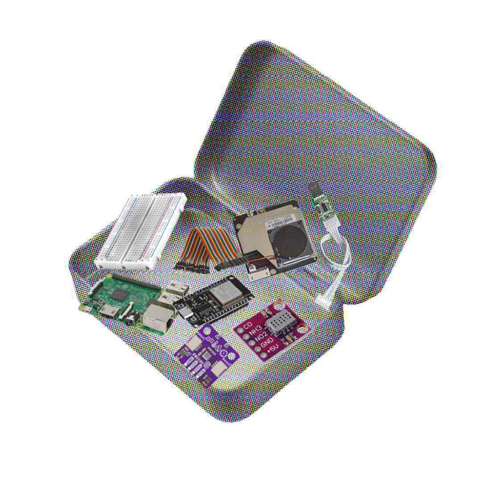
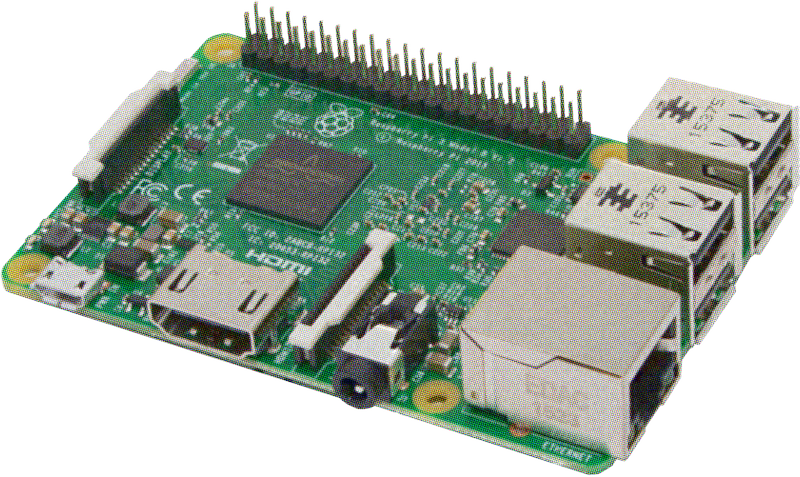
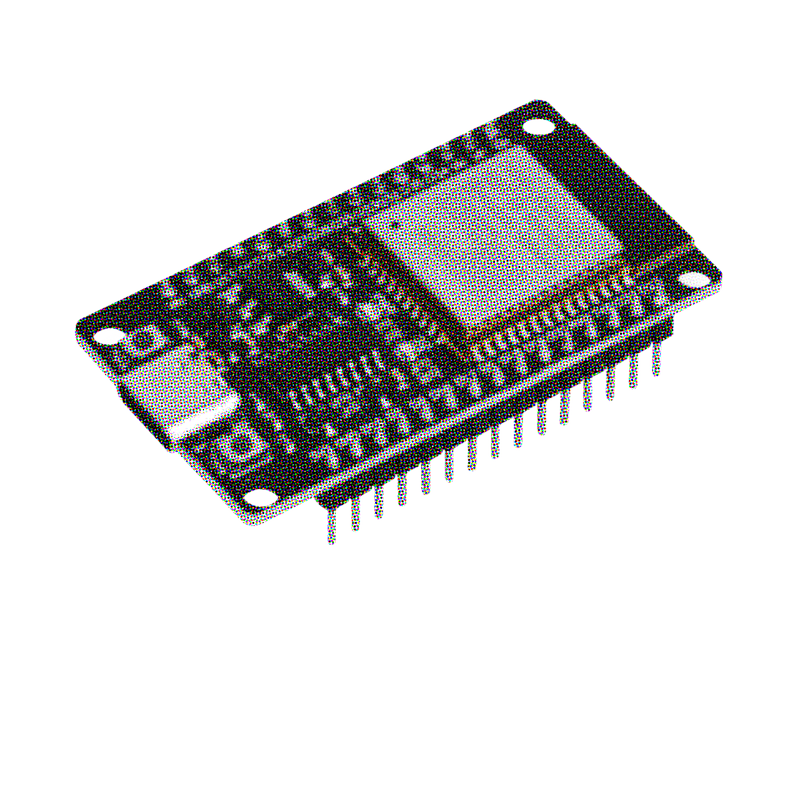
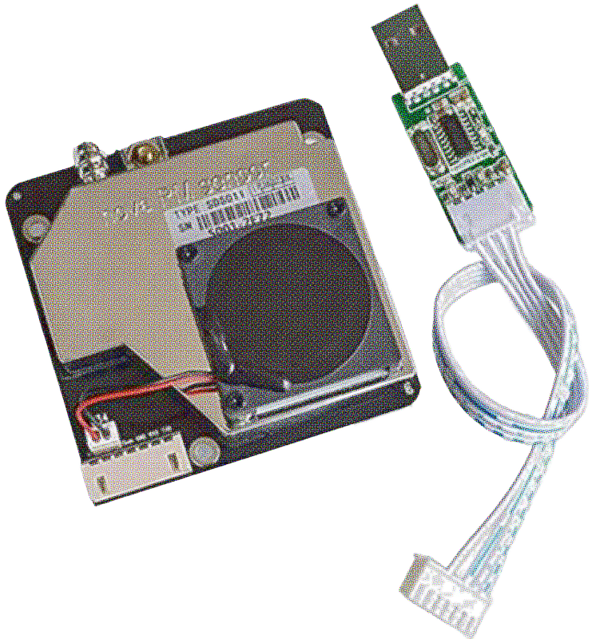
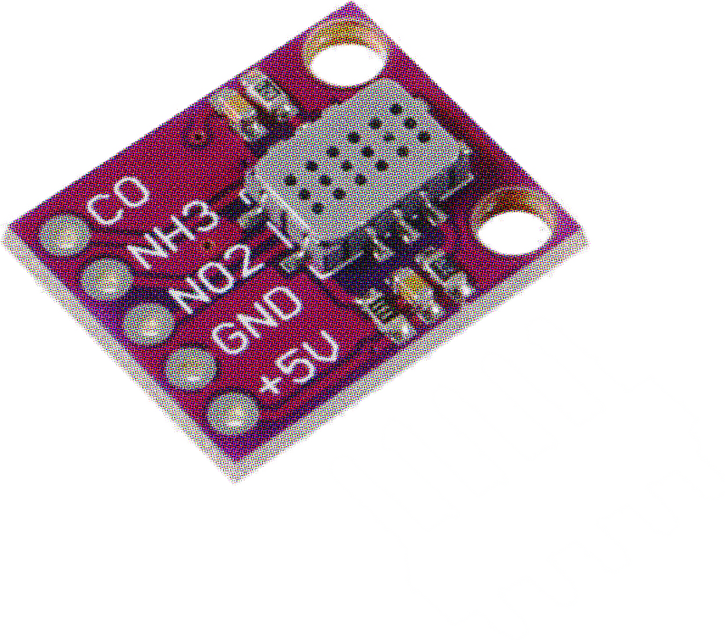
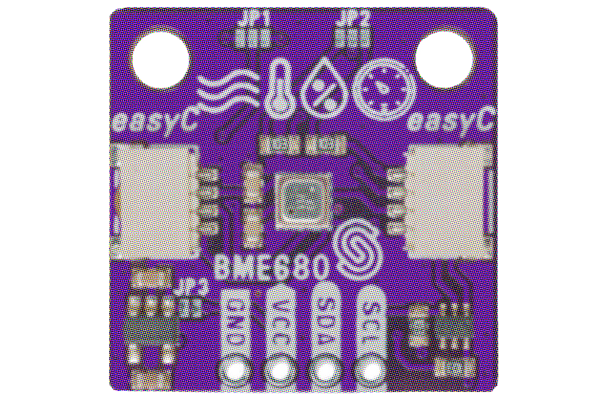
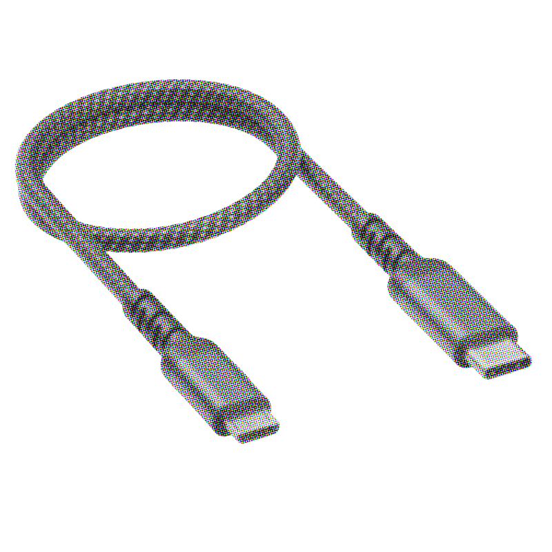
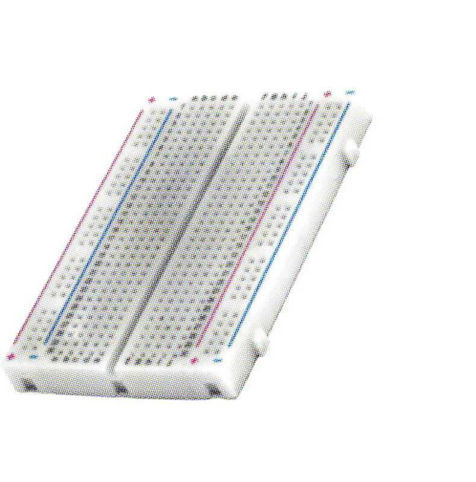
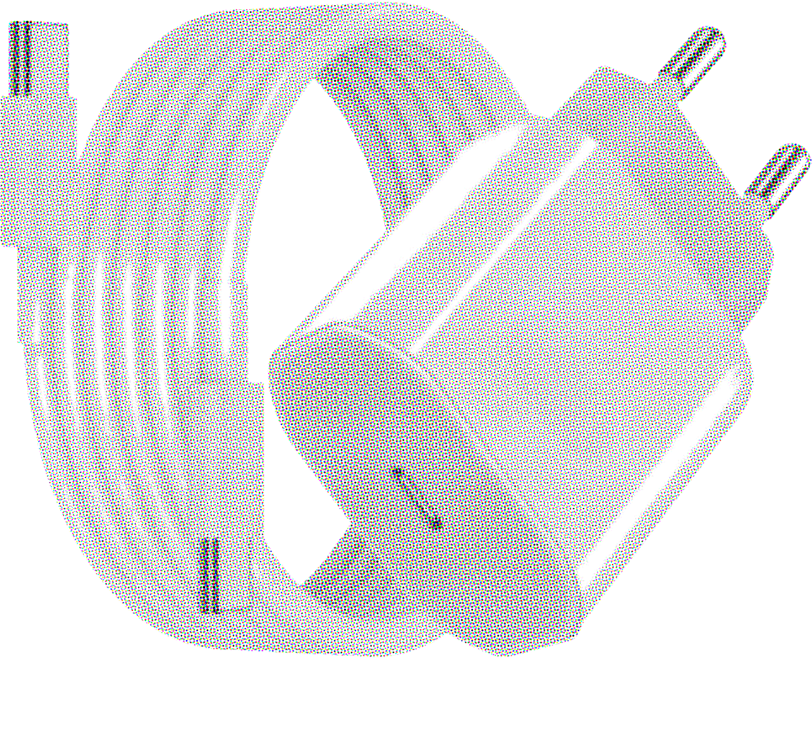

1.1 Perché monitorare dal basso
Questa è una guida per costruire un sensore di qualità dell'aria che monitora i livelli di inquinamento. È stata scritta per creare una rete di sensori di proprietà della comunità a Taranto, ma può essere usata da chiunque senta il bisogno di adottare metodologie di citizen science per monitorare lo spazio in cui vive. È pensata in particolare per chi resiste nelle Sacrifice Zones del mondo, come strumento per contrastare la recinzione dell'informazione.
Questa guida ti accompagna passo per passo nella costruzione del sensore per la qualità dell'aria "Aria Bene Comune". È pensata per chi parte da zero: non serve esperienza di elettronica o programmazione. Useremo materiali semplici, codice aperto e un linguaggio chiaro, perché lo strumento per conoscere la propria aria dovrebbe essere accessibile a tutti, non riservato a chi possiede competenze specialistiche. Questa non è la guida definitiva a un sensore di qualità dell'aria: discussioni e modifiche sono benvenute e supportate. Sperimentiamo e impariamo insieme!
Chi controlla i sensori controlla anche il racconto della realtà. Quando le uniche misurazioni "ufficiali" appartengono a chi ha interesse a minimizzare l'inquinamento, la voce di chi vive in quei luoghi diventa "aneddoto", mentre il silenzio istituzionale si traveste da "scienza". Una rete di sensori costruita dalle persone esiste proprio per rovesciare questo squilibrio, e offre:
- Una mappa distribuita — puoi vedere come la qualità dell'aria varia tra zone diverse, non solo in un punto.
- Una memoria condivisa — l'andamento nel tempo diventa una risorsa comune, utile per capire pattern e momenti critici.
- Dati dal basso — le misurazioni provengono da chi vive in quei luoghi, integrando il monitoraggio ufficiale.
- Consapevolezza e partecipazione — costruire un sensore significa contribuire direttamente alla conoscenza ambientale condivisa del luogo in cui vivi.
1.2 Il tuo ruolo nella rete
Costruendo e attivando questo sensore, diventi uno dei nodi della rete. Ogni nodo ha un proprio identificativo (nello sketch è il campo sensor_id, ad es. "S1"): è ciò che permette di distinguere i dati provenienti dai diversi sensori della comunità.
Oggi il programma del Raspberry Pi raccoglie le letture, le unisce in snapshot e le mostra su una dashboard accessibile dalla rete locale, mantenendo anche un archivio storico. La piattaforma comunitaria "Aria Bene Comune", che riunirà i dati di tutti i nodi in un'unica visualizzazione, è attualmente in fase di sviluppo.
Il dispositivo misura le principali grandezze legate all'aria che respiriamo:
- Particolato PM2.5 e PM10 — le polveri sottili sospese nell'aria.
- Ammoniaca (NH₃), monossido di carbonio (CO) e biossido di azoto (NO₂) — gas legati a traffico, combustioni e attività agricole.
- Composti organici volatili (VOC) — vapori di vernici, solventi, detergenti; espressi come resistenza del gas in kΩ.
- Temperatura, umidità e pressione atmosferica — le condizioni ambientali di base.
Il tuo sensore funziona perfettamente anche da solo, ma è pensato per contribuire, insieme a molti altri, a un quadro condiviso e continuamente aggiornato dell'aria che respiriamo.








Se non hai mai usato una breadboard, questa parte è per te. Andremo con calma, perché una volta capita un'idea semplice, tutto il resto diventa facile. Prenditi il tuo tempo: è la parte che all'inizio sembra misteriosa e dopo sembrerà ovvia.
Cos'è una breadboardUna breadboard è una basetta di plastica piena di piccoli foretti che permette di collegare tra loro componenti elettronici senza saldare. Basta inserire fili e piedini nei foretti. La parte intelligente è che molti di quei foretti sono già collegati tra loro all'interno della basetta, tramite striscioline metalliche nascoste. Quindi, quando inserisci due fili in due foretti collegati internamente, quei due fili risultano elettricamente connessi — come se li avessi attorcigliati insieme.
Il sensore che stai per costruire non è un dispositivo isolato. È un nodo di "Aria Bene Comune", una rete comunitaria per il monitoraggio della qualità dell'aria. L'idea è semplice: tante persone costruiscono e mettono in funzione il proprio sensore, e i dati di tutti vengono raccolti insieme in un'unica piattaforma condivisa.
3.1 Perché un monitoraggio collettivo
Un singolo sensore racconta com'è l'aria in un punto e in un momento. Ma la qualità dell'aria è un fenomeno che riguarda interi quartieri e città, e cambia da via a via. Mettendo in rete molti sensori si ottiene qualcosa che nessun apparecchio da solo può dare:
- Una mappa diffusa: si vede come varia l'aria tra zone diverse, non solo in un punto.
- Una memoria condivisa: l'andamento nel tempo diventa un patrimonio comune, utile per capire tendenze e momenti critici.
- Un dato dal basso: le misure nascono dalle persone che vivono quei luoghi, a complemento delle centraline ufficiali.
- Consapevolezza e partecipazione: chi costruisce un sensore contribuisce in prima persona a una conoscenza collettiva dell'ambiente in cui vive.
3.2 Il tuo ruolo nella rete
Costruendo e attivando questo sensore diventi uno dei nodi della rete. Ogni nodo ha un
proprio identificativo (nello sketch è il campo sensor_id, ad esempio
"S1"): è ciò che permette di distinguere i dati che arrivano dai diversi
sensori della comunità.
3.3 Come i dati raggiungono la piattaforma
Oggi il programma del Raspberry Pi raccoglie le letture, le unisce in istantanee e le mostra in una dashboard accessibile sulla rete locale, conservando anche lo storico. La piattaforma comunitaria di "Aria Bene Comune", che riunirà i dati di tutti i nodi in un'unica vista, è attualmente in sviluppo.
Il tuo sensore funziona benissimo da solo, ma è progettato per fare qualcosa di più grande: contribuire, insieme a tanti altri, a una fotografia condivisa e in continuo aggiornamento dell'aria che respiriamo.
3.4 Come la piattaforma interpreta i dati
La piattaforma "Aria Bene Comune" parte dalla media oraria di ogni inquinante e la traduce in un giudizio sulla qualità dell'aria e nei suoi possibili effetti sulla salute. Le soglie usate sono ispirate alle linee guida OMS / WHO Air Quality Guidelines, adattate alle esigenze della rete.
Consigli pratici per livello
Tre famiglie di inquinanti
| Famiglia | Inquinanti | Effetti principali |
|---|---|---|
| Particolato | PM2.5, PM10 | Agiscono soprattutto su polmoni e cuore. |
| Gassosi | NO₂ e altri gas irritanti | Agiscono sulle vie respiratorie e sulle mucose. |
| Sistemici | CO, NH₃ | Possono avere effetti sull'intero organismo: mal di testa, nausea, confusione. |
Queste indicazioni hanno scopo informativo e di sensibilizzazione e non sostituiscono il parere di un medico. Le persone con patologie respiratorie o cardiache dovrebbero sempre seguire le indicazioni del proprio specialista.
4.1 Glossario rapido
| Termine | Significato |
|---|---|
| Nodo sensore | La scheda che legge i sensori (qui l'ESP32). |
| Server | La scheda che raccoglie e mostra i dati (qui il Raspberry Pi). |
| JSON | Un formato di testo per scambiare dati, es. {"co": 1.2, "no2": 30}. |
| Baud rate | La velocità della comunicazione seriale; qui 115200. |
| GPIO | I pin programmabili della scheda. |
| I²C | Una "lingua" a due fili (SDA, SCL) usata dal BME680. |
| ADC | Convertitore analogico-digitale: legge tensioni come numeri (l'ESP32 lo ha già). |
| Endpoint API | Un indirizzo web (es. /api/live) che restituisce dati. |
4.2 Lista dei componenti
| Componente | Ruolo | Dettaglio |
|---|---|---|
| Raspberry Pi | Server + dashboard | Pi 4 o Pi Zero 2 W con Raspberry Pi OS |
| ESP32 DevKit | Nodo sensore | Legge gas e ambiente, invia JSON via USB |
| SDS011 | Particolato | PM2.5 e PM10, collegato al Pi via adattatore USB |
| MiCS-6814 | Gas multipli | NH₃, CO, NO₂ — uscite analogiche all'ESP32 |
| BME680 | Ambiente + VOC | Temperatura, umidità, pressione, gas (kΩ) via I²C |
| 2 cavi USB | Collegamenti dati | ESP32→Pi e SDS011→Pi |
| Breadboard + jumper | Cablaggio | Per collegare MiCS-6814 e BME680 all'ESP32 |
| Alimentatore Pi | Alimentazione | Alimentatore ufficiale del Raspberry Pi |
Il MiCS-6814 ha bisogno di alcuni minuti di riscaldamento prima di fornire letture stabili. È normale: lascialo acceso un po' prima di fidarti dei valori dei gas.
5.1 Collegamenti
Spegni sempre l'ESP32 (scollega l'USB) mentre cabli. Il BME680 va a 3,3 V; il MiCS-6814 a 5 V. Tutte le masse (GND) devono essere in comune.
| Sensore (pin) | Pin ESP32 | Note |
|---|---|---|
| BME680 – VCC | 3V3 | Alimentazione 3,3 V |
| BME680 – GND | GND | Massa comune |
| BME680 – SDA | GPIO12 | Linea dati I²C (Wire.begin(12, 13)) |
| BME680 – SCL | GPIO13 | Linea clock I²C |
| MiCS-6814 – VCC | 5V (VIN) | Alimentazione 5 V |
| MiCS-6814 – GND | GND | Massa comune |
| MiCS-6814 – NH₃ | GPIO1 | Ingresso analogico (PIN_NH3) |
| MiCS-6814 – NO₂ | GPIO2 | Ingresso analogico (PIN_NO2) |
| MiCS-6814 – CO | GPIO3 | Ingresso analogico (PIN_CO) |
I pin GPIO1, 2, 3 per gli ingressi analogici e GPIO12/13 per l'I²C sono tipici delle schede ESP32-S3 / S2 / C3. Sui vecchi ESP32 classici gli ingressi analogici hanno numeri diversi (es. 34, 35, 32). Usa la numerazione che corrisponde alla tua scheda, mantenendola coerente con lo sketch.
Lo sketch cerca il BME680 all'indirizzo 0x76. Alcuni moduli usano invece
0x77. Se la scheda stampa "BME680 not found", prova a cambiare
l'indirizzo in bme.begin(0x77, &Wire).
5.2 Preparare l'Arduino IDE
- Scarica e installa l'Arduino IDE da arduino.cc.
- In File → Impostazioni, aggiungi l'URL del pacchetto schede ESP32 nel campo "URL aggiuntive per il Gestore schede".
- In Strumenti → Scheda → Gestore schede, cerca "esp32" e installa il pacchetto.
- Seleziona Strumenti → Scheda → ESP32 Dev Module.
- Dal Gestore librerie installa: Adafruit BME680, Adafruit Unified Sensor e ArduinoJson (di Benoit Blanchon).
5.3 Lo sketch dell'ESP32
Ogni 5 minuti esegue una raffica di 5 letture ravvicinate, ne calcola la media e invia un solo valore in formato JSON sulla porta USB a 115200 baud. All'avvio attende 30 secondi per il riscaldamento dei sensori di gas.
#include <Wire.h>
#include <ArduinoJson.h>
#include <Adafruit_Sensor.h>
#include <Adafruit_BME680.h>
const char* SENSOR_ID = "S1";
const int PIN_NH3 = 1;
const int PIN_NO2 = 2;
const int PIN_CO = 3;
// Campionamento: 5 letture ravvicinate, una raffica ogni 5 minuti
const int BURST_SAMPLES = 5; // letture per raffica
const long SAMPLE_GAP_MS = 2000; // pausa fra le letture (2 s)
const long CYCLE_PERIOD_MS = 300000; // intervallo fra le raffiche (5 min)
Adafruit_BME680 bme;
bool bmeFound = false;
void setup() {
Serial.begin(115200);
delay(1000);
Wire.begin(12, 13);
if (bme.begin(0x76, &Wire)) {
bme.setTemperatureOversampling(BME680_OS_8X);
bme.setHumidityOversampling(BME680_OS_2X);
bme.setPressureOversampling(BME680_OS_4X);
bme.setIIRFilterSize(BME680_FILTER_SIZE_3);
bme.setGasHeater(320, 150);
bmeFound = true;
Serial.println("BME680 OK.");
} else {
Serial.println("BME680 not found - sending gas sensors only.");
}
Serial.println("Waiting 30s for MICS-6814 heaters...");
delay(30000);
Serial.println("Starting.");
}
void loop() {
double nh3Sum=0, no2Sum=0, coSum=0;
double tSum=0, hSum=0, pSum=0, gSum=0;
int gasCount=0, bmeCount=0;
for (int i = 0; i < BURST_SAMPLES; i++) {
nh3Sum += (analogRead(PIN_NH3) / 4095.0) * 100.0;
no2Sum += (analogRead(PIN_NO2) / 4095.0) * 100.0;
coSum += (analogRead(PIN_CO) / 4095.0) * 100.0;
gasCount++;
if (bmeFound && bme.performReading()) {
tSum += bme.temperature;
hSum += bme.humidity;
pSum += bme.pressure / 100.0;
gSum += bme.gas_resistance / 1000.0;
bmeCount++;
}
if (i < BURST_SAMPLES - 1) delay(SAMPLE_GAP_MS);
}
StaticJsonDocument<300> doc;
doc["sensor_id"] = SENSOR_ID;
doc["samples"] = gasCount;
doc["nh3"] = nh3Sum / gasCount;
doc["no2"] = no2Sum / gasCount;
doc["co"] = coSum / gasCount;
if (bmeCount > 0) {
doc["temperature"] = tSum / bmeCount;
doc["humidity"] = hSum / bmeCount;
doc["pressure"] = pSum / bmeCount;
doc["gas_kohm"] = gSum / bmeCount;
}
String payload;
serializeJson(doc, payload);
Serial.println(payload);
long burstElapsed = (long)(BURST_SAMPLES - 1) * SAMPLE_GAP_MS;
long wait = CYCLE_PERIOD_MS - burstElapsed;
if (wait < 0) wait = 0;
delay(wait);
}Note sul codice
- Riscaldamento integrato: il
delay(30000)nel setup attende 30 secondi per stabilizzare i riscaldatori del MiCS-6814. - Raffica di 5 letture: mediare più letture riduce il "rumore" tipico dei sensori di gas, dando un valore più stabile.
- Un invio ogni 5 minuti: il campo
samplesnel JSON indica quante letture compongono la media (normalmente 5). - Valori dei gas:
nh3,no2ecosono la lettura ADC in percentuale (0–100), non ancora concentrazioni reali. - Robustezza: se il BME680 non viene trovato, lo sketch continua a inviare i soli gas.
Dopo aver caricato lo sketch, apri il Monitor seriale a 115200 baud: vedrai i messaggi
di avvio, poi una riga ogni 5 minuti come
{"sensor_id":"S1","samples":5,"nh3":21.3,...}
Per le prime prove abbassa temporaneamente CYCLE_PERIOD_MS a 15000 (15 s).
6.1 Collegamenti USB
Sul Raspberry Pi non si cabla nulla su breadboard: si collegano due dispositivi via USB.
- Il sensore SDS011, tramite il suo adattatore USB, compare di solito come
/dev/ttyUSB0. - L'ESP32, collegato con il cavo USB, compare di solito come
/dev/ttyACM0.
Se i nomi non corrispondono, esegui nel Terminale:
ls /dev/ttyUSB* /dev/ttyACM*e aggiorna le variabili SDS011_PORT ed ESP_PORT all'inizio del programma.
6.2 Installare il software
Installa Raspberry Pi OS sulla microSD con Raspberry Pi Imager, poi apri un Terminale e:
sudo apt update && sudo apt upgrade -y
sudo apt install -y python3-pip
pip3 install flask flask-cors pyserialCopia sul Pi il file del server e, se presente, la cartella dist/ con la dashboard React. Poi aggiungi il tuo utente al gruppo delle porte seriali:
sudo usermod -a -G dialout $USER
sudo reboot6.3 Come funziona il programma del Pi
| Parte del programma | Cosa fa |
|---|---|
| Lettore SDS011 | Legge i pacchetti del sensore di particolato e ne ricava PM2.5 e PM10. |
| Lettore ESP32 | Legge le righe JSON dall'ESP32 e ne estrae gas e dati ambientali. |
| Ciclo di unione | Ogni 30 secondi unisce le ultime letture in un'unica "istantanea". |
| Media oraria | Accumula le istantanee dell'ora in corso e, allo scoccare dell'ora, ne calcola e archivia la media. |
| Salvataggio | Scrive i dati in file CSV e lo storico in history.json e hourly.json. |
| Simulazione | Se manca una scheda, genera dati realistici al suo posto. |
| Server web (Flask) | Pubblica gli endpoint API e serve la dashboard sulla porta 5050. |
Gli endpoint disponibili
| Indirizzo | Cosa restituisce |
|---|---|
| /api/live | L'ultima istantanea unita di tutti i valori. |
| /api/history | Lo storico delle ultime 24 ore. |
| /api/hourly | Le medie orarie (è il dato mostrato dalla piattaforma). |
| /api/status | Stato di connessione delle due schede. |
| /api/pm | Le ultime 50 letture del particolato. |
| /api/mean | Le ultime 50 letture ESP32, mediate per sensore. |
| /data (POST) | Permette a un ESP32 di inviare dati via Wi-Fi invece che via USB. |
Dal campione alla media oraria
- L'ESP32 effettua 5 letture ravvicinate e ne invia la media: un valore ogni 5 minuti (circa 12 valori l'ora).
- Il Raspberry Pi riceve questi valori e, insieme al particolato dell'SDS011, li accumula per l'ora in corso.
- Allo scoccare di ogni nuova ora, il server calcola la media di tutti i valori raccolti nell'ora appena conclusa e la archivia in
hourly.json. - La media oraria è il dato esposto su
/api/hourly— ciò che la piattaforma comunitaria mostra ai cittadini.
Avviare il server
cd ~/aria-bene-comune # la cartella dove hai messo il file
python3 server.py # usa il nome reale del tuo fileTrova l'indirizzo IP del Pi con:
hostname -IDa qualsiasi dispositivo sulla stessa rete, apri il browser su http://INDIRIZZO-IP:5050 per vedere la dashboard.
Una delle idee alla base di "Aria Bene Comune" è che il sensore sia davvero alla portata di tutti: open source e costruito con materiali di recupero. Non serve una custodia comprata o stampata in 3D. Va benissimo qualsiasi contenitore resistente all'acqua che hai già in casa: una scatola di latta dei biscotti, un contenitore per alimenti, una scatola degli attrezzi di plastica.
La custodia deve proteggere l'elettronica dalla pioggia, ma allo stesso tempo lasciar passare liberamente l'aria fino ai sensori.
7.1 Cosa ti serve per la custodia
- Un contenitore resistente all'acqua con coperchio.
- Un attrezzo per fare i fori: punteruolo, trapano, o un chiodo e un martello.
- Nastro adesivo resistente o colla a caldo per fissare e sigillare.
- Nastro adesivo isolante (utile se la scatola è di metallo).
- Facoltativo: rete a maglia fine (zanzariera) per coprire i fori dell'aria.
- Facoltativo: fascette da elettricista per fissare la scatola.
7.2 I fori per l'aria
- Pratica un gruppo di fori vicino ai sensori (SDS011 e BME680).
- Fai i fori sui lati o sul fondo, mai rivolti verso l'alto: raccoglierebbero pioggia.
- Bastano alcuni fori di pochi millimetri: meglio tanti piccoli che un grande buco aperto.
- Copri i fori con rete a maglia fine per tenere fuori insetti e sporco.
Il sensore SDS011 ha una sua presa d'aria con una piccola ventola. Posiziona la scatola in modo che quella presa sia il più possibile vicina a un gruppo di fori, e che né la rete né i cavi la ostruiscano.
7.3 Il foro per i cavi e la goccia di sgocciolamento
- Pratica un solo foro per i cavi, della misura più piccola possibile, su un lato che guarda verso il basso.
- Sigilla attorno con colla a caldo o nastro, lasciando il cavo libero di muoversi un minimo.
- Crea una piega del cavo a "U" rovesciata appena fuori dal foro (un cappio verso il basso): la pioggia gocciola via prima di raggiungere il foro. Questo accorgimento si chiama goccia di sgocciolamento.
7.4 Alimentazione: pannello solare e power bank
Il pannello solare ricarica il power bank, e il power bank alimenta il Raspberry Pi. La batteria fa da "serbatoio": accumula energia quando c'è sole e continua ad alimentare il sistema quando il sole manca.
Deve supportare la "ricarica passthrough": essere in grado di ricaricarsi dal pannello e contemporaneamente alimentare il Pi. Molti power bank economici si spengono quando vengono caricati — questi non vanno bene.
7.5 Disporre i componenti nella scatola
- Se la scatola è di metallo, rivesti l'interno con nastro adesivo isolante: il metallo conduce elettricità e un contatto accidentale può causare un cortocircuito.
- Sistema il Raspberry Pi e il power bank nella parte più riparata, lontano dai fori dell'aria.
- Avvicina i sensori (SDS011 e BME680) ai fori dell'aria, ma senza che tocchino le pareti.
- Appoggia l'elettronica su un piccolo supporto (tappo, gommapiuma) per tenerla sollevata dal fondo.
- Metti nella scatola una bustina di gel di silice per assorbire l'umidità in eccesso.
7.6 Montaggio all'esterno
- Posiziona il sensore in un punto arieggiato, lontano da fonti di calore o di fumo dirette.
- L'altezza tipica per misure confrontabili è circa 1,5–3 metri da terra.
- Evita angoli senza ricircolo d'aria: l'aria deve poter circolare attorno alla scatola.
- Fissa bene la scatola (fascette a una ringhiera) perché il vento non la sposti.
- Orienta il pannello solare verso sud, inclinandolo perché non trattenga l'acqua.
- Collega l'SDS011 e l'ESP32 alle porte USB del Pi.
- Per le prime prove, alimenta il Raspberry Pi dalla rete elettrica: è più stabile mentre verifichi che tutto funzioni.
- Alimenta il Raspberry Pi e attendi che il sistema sia avviato.
- Avvia il server come visto nel capitolo 6.
- Lascia tutto acceso 10–15 minuti: è il tempo di riscaldamento dei sensori di gas.
- Apri la dashboard nel browser e controlla che i valori cambino nel tempo.
- Apri
/api/statusper verificare che entrambe le schede risultino connesse (true).
Se in /api/status una scheda risulta false ma vedi comunque
dei valori, quei valori sono simulati. Controlla i collegamenti USB e i nomi delle porte.
9.1 Riscaldamento
Lo sketch dell'ESP32 attende già 30 secondi all'avvio per i riscaldatori del MiCS-6814. Per letture davvero affidabili, però, conviene lasciare il dispositivo acceso in aria pulita per almeno 10–15 minuti prima di registrare dati seri.
9.2 Calibrazione di base
- PM2.5 e PM10: l'SDS011 fornisce già µg/m³, quindi è praticamente pronto all'uso.
- Gas (NH₃, CO, NO₂): nello sketch questi valori sono la lettura ADC in percentuale (0–100), non concentrazioni reali. Annota i valori in aria pulita come "linea di base". Per convertirli in concentrazioni effettive serve applicare le curve del produttore del MiCS-6814.
-
VOC (
gas_kohm): è una resistenza in kΩ. In aria pulita il valore è più alto; cala in presenza di vapori. Più che il numero assoluto, conta come varia rispetto alla linea di base.
Un sensore hobbistico indica tendenze (l'aria migliora o peggiora) più che misure di precisione da laboratorio. Per uso domestico e didattico va benissimo.
| Problema | Possibile causa | Cosa fare |
|---|---|---|
| "unavailable" all'avvio | Porta USB sbagliata | Controlla i nomi con ls /dev/ttyUSB* /dev/ttyACM* e aggiorna le variabili |
| Permesso negato sulla seriale | Utente non nel gruppo dialout | Esegui usermod -a -G dialout e riavvia |
| Dati sempre identici | Sensori non riscaldati o simulazione attiva | Attendi 10–15 min; controlla /api/status |
| Dashboard non si apre | IP sbagliato o porta chiusa | Verifica IP con hostname -I; usa la porta :5050 |
| ESP32 non riconosciuto | Driver USB mancante | Installa i driver CP210x/CH340 sul sistema |
| JSON non letto | Baud rate o formato diverso | Assicurati che lo sketch usi 115200 e i campi corretti |
11.1 Sicurezza
- Stacca l'alimentazione prima di modificare i collegamenti dell'ESP32.
- Rispetta le tensioni: BME680 a 3,3 V, MiCS-6814 a 5 V.
- Questo dispositivo è didattico e non sostituisce un rilevatore di CO certificato per la sicurezza domestica.
11.2 Idee per migliorarlo
- Collegare il sensore alla piattaforma comunitaria "Aria Bene Comune" (in sviluppo).
- Usare l'endpoint
/dataper inviare i dati dell'ESP32 via Wi-Fi invece che via cavo USB. - Configurare l'avvio automatico del server con
systemd. - Aggiungere più nodi ESP32 con
sensor_iddiversi (S1, S2…): il server li media già con/api/mean. - Stampare in 3D una custodia ventilata per proteggere l'elettronica.
Buona costruzione!